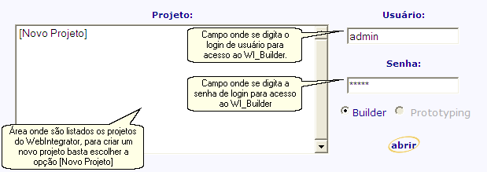

Para que possamos criar o projeto proposto por esse tutorial primeiramente precisaremos acessar WI_Builder, para isso acesse a página incial do WebIntegrator e nela clique no link Builder, a tela de entrada do WI_Builder será aberta em uma nova janela. A figura abaixo ilustra a tela de entrada do WI_Builder.

Para criamos o projeto escolha a opção [Novo Projeto] do campo Projeto e preencha os campos Usuário e Senha com nome de login e a senha, respectivamente, de algum usuário já cadastrado no WI_Builder. Caso esta seja a primeira vez que o WI_Builder esteja sendo usado e/ou ainda não haja nenhum usuário cadastrado digite admin tanto no campo Usuário quanto no campo Senha. Por fim clique no botão "abrir".
Na janela de criação de projeto deve ser digitado um nome e uma descrição opicional para o projeto. No campo Nome digite "tutorial", sem as aspas, e caso queira coloque alguma descrição sobre o projeto no campo Descrição, por fim clique no botão "adicionar". Baseado nessas informações o WI_Builder irá criar a estrutura inicial do projeto para que possamos começar a trabalhar em sua definição.
Os projetos do WebIntegrator geralmente são acessados da seguinte forma http://<host>/<nome-do-projeto>/... onde <host> indica o nome ou IP da máquina onde está instalado o projeto e <nome-do-projeto> é o nome do projeto que foi definido no momento da criação pelo WI_Builder.
Após a tela de criação do projeto o usuário é redirecionado automaticamente para o ambiente de desenvolvimento do WI_Builder para que possam ser feitas as definições do projeto.